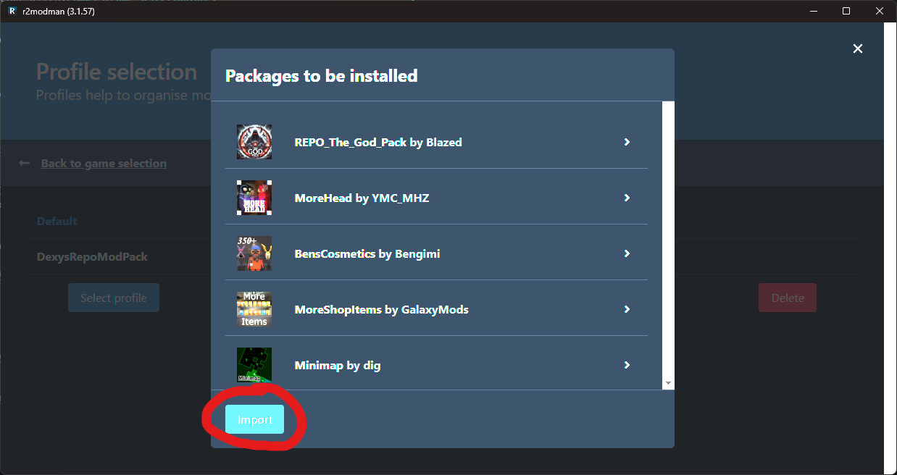

R2ModMan Installation Guide
by dexy woof
Follow these steps to install and set up R2ModMan for playing modded games:
Installation Steps
-
Install R2ModMan From this link:
R2ModMan v3.1.57 - Start R2ModMan and Search "Repo" in the Game Selection Screen and click on "Set as default"
- In the Profile Selection Screen, click on "Import/Update" Button.
- Then Click on "From code"
-
Type the code and click on "Continue"
01961205-3a8b-0d46-0ea4-694af68a5bda - Click on "Import". 
-
After that, click on "Import new profile", or if updating the modpack on "Update existing profile".

-
Click on "Create"

- When the download finished, click on the new profile and click on "Select Profile".
-
Finally click on "Start modded", to play the modpack!

Ready to Play!
Now you've synced your mods! You can start modded and play with friends now!
Note: Make sure you have the base game installed before running the modded version.